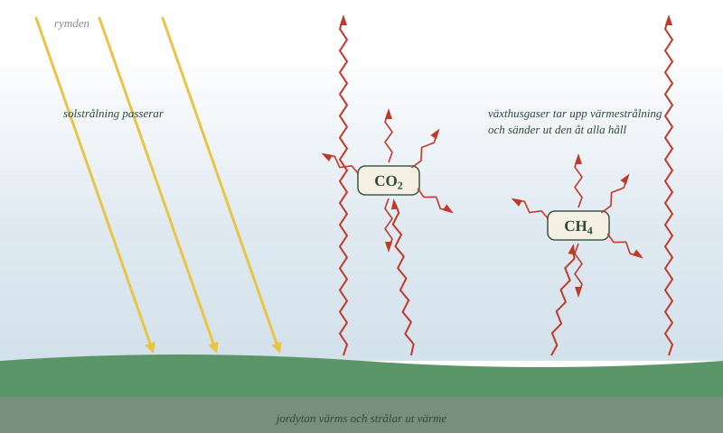
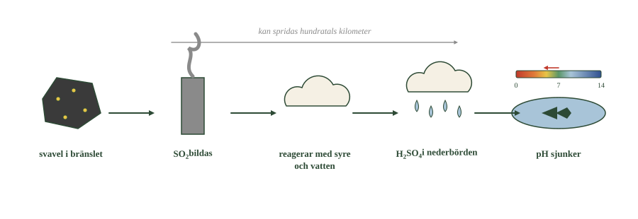
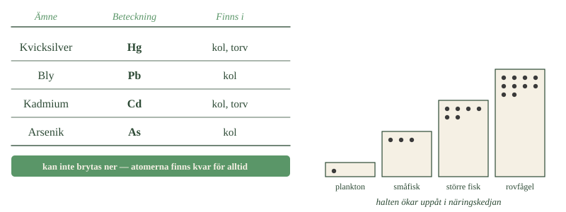

- Vad händer med solstrålningen som träffar jorden?
- Vad är det växthusgaserna gör med värmestrålningen?
- Varför är växthuseffekten nödvändig?
- Vad är det då som är problemet?
- Hur skiljer sig metan från koldioxid som växthusgas?
Solen värmer, jorden strålar tillbaka
Solen skickar ut strålning åt alla håll, och en del av den träffar jorden.
Det mesta av strålningen går rakt igenom atmosfären och tas upp av mark och hav. Jordytan blir varm.
Men en varm yta står inte still. Den skickar i sin tur ut energi — inte som synligt ljus, utan som värmestrålning. Det är samma sorts strålning du känner från ett element eller från en asfaltsväg en sommarkväll.
Växthusgaserna släpper inte ut all värme
Om all värmestrålning försvann rakt ut i rymden skulle jorden vara iskall.
Men i atmosfären finns växthusgaser: vattenånga, koldioxid och metan. De har en egenskap som de flesta andra gaser saknar — de kan ta upp värmestrålning.
En växthusgas som tagit upp energi skickar sedan ut den igen, men åt alla håll. En del går uppåt mot rymden, en del går nedåt mot jorden igen.
Resultatet är att en del av värmen stannar kvar. Jorden blir varmare än den annars hade varit.
- Jämför de gula och de röda pilarna. Vad är det för skillnad på dem?
- Hur många pilar går ut från en molekyl som tagit upp strålning?
- Vad skulle hända om det fanns fler molekyler i bilden?

Det är förstärkningen som är problemet
Utan växthuseffekten skulle medeltemperaturen på jorden ligga långt under nollstrecket. Den naturliga växthuseffekten är alltså nödvändig för att det ska gå att leva här.
Problemet är inte att den finns.
Problemet är att mängden växthusgaser ökar. Ju fler växthusgaser i luften, desto mer av värmestrålningen tas upp, och desto mindre försvinner ut i rymden.
Växthuseffekten blir alltså förstärkt. Det är det som gör att klimatet ändras.
Fossilt kol tillför något nytt
Här kommer kretsloppen tillbaka.
När ved brinner går kolet tillbaka till luften — men det kom därifrån för några årtionden sedan. Ingen ny koldioxid tillförs.
När fossila bränslen brinner är det annorlunda. Kolet har legat i berggrunden i miljontals år. På några sekunder är det tillbaka i luften.
Hav och växter tar upp en del av det, men inte lika snabbt som vi tillför det. Därför ökar mängden koldioxid i luften.
Metan är starkare men kortlivad
Metan är också en växthusgas, och en mycket starkare sådan än koldioxid. En metanmolekyl tar upp värmestrålning mycket effektivare.
Metan läcker ut när naturgas och olja utvinns och transporteras. Den bildas också naturligt i våtmarker och hos kor.
Men metan och koldioxid beter sig olika. Metan bryts ner i luften på ungefär tio år. Koldioxid har inget lika enkelt slut — en del blir kvar och påverkar klimatet mycket länge.
Metan är alltså starkt men kortlivat. Koldioxid är svagare men stannar kvar.
- Vad händer med solstrålningen som träffar jorden?
- Vad är det växthusgaserna gör med värmestrålningen?
- Varför är växthuseffekten nödvändig?
- Vad är det då som är problemet?
- Hur skiljer sig metan från koldioxid som växthusgas?
Fossila bränslen har gett människan tillgång till stora mängder energi. Men när kol, olja och naturgas utvinns och förbränns påverkas också miljön.
En del av påverkan beror på kolet i bränslet. Andra problem orsakas av ämnen som följer med kolet eller bildas under förbränningen.
Det är värt att hålla isär dem: koldioxid och metan påverkar klimatet, svavel- och kväveföreningar påverkar mark och vatten, och vissa metaller är giftiga för levande organismer.
Växthuseffekten är nödvändig
Solens strålning passerar genom atmosfären och absorberas av mark och hav. Jordytan värms upp och skickar ut energi igen, men som värmestrålning — infraröd strålning med längre våglängd.
All den värmen försvinner inte ut i rymden. I atmosfären finns växthusgaser: vattenånga, koldioxid och metan. De absorberar en del av värmestrålningen och strålar ut energi i olika riktningar, varav en del tillbaka mot jordytan.
Därför är jorden varmare än den annars vore. Utan den naturliga växthuseffekten skulle medeltemperaturen ligga långt under fryspunkten.
Problemet är alltså inte att växthuseffekten finns. Problemet uppstår när mängden växthusgaser ökar och effekten förstärks.
Fossilt kol tillför något nytt
När fossila bränslen förbränns reagerar kolet med syre och bildar koldioxid. På några sekunder kan en kolatom som varit borta ur atmosfären i hundratals miljoner år vara tillbaka.
Det är ett tillskott till det snabba kretsloppet. Hav och växtlighet tar upp en del av den extra koldioxiden, men inte lika snabbt som vi tillför den. Därför ökar halten i atmosfären.
Och när halten ökar absorberas mer av jordens värmestrålning. Växthuseffekten förstärks, och mer energi stannar kvar.
Det centrala är alltså inte bara att koldioxid bildas. Det är att kol flyttas från ett långsamt geologiskt lager till atmosfären mycket snabbare än det kan föras tillbaka.
Metan är en kraftigare växthusgas än koldioxid
Metan är också en växthusgas, och en betydligt starkare sådan. Räknat per molekyl absorberar metan värmestrålning mycket effektivare än koldioxid.
Metan läcker ut när naturgas och olja utvinns och transporteras, och bildas dessutom naturligt i våtmarker och hos idisslare.
Men de två gaserna beter sig olika i atmosfären. Metan bryts ner genom kemiska reaktioner inom ungefär ett årtionde. Koldioxid har inget lika enkelt slut — en del tas upp av hav och växter, men en del påverkar klimatet under mycket lång tid.
Metan är alltså starkt men kortlivat, koldioxid svagare men långvarigt. Det är därför minskade metanutsläpp ger snabb effekt, medan koldioxidutsläpp fortsätter verka långt efter att de upphört.
---
Växthusgaserna är de molekyler som kan vibrera
Standardtexten säger att växthusgaser kan ta upp värmestrålning och att de flesta andra gaser inte kan det. Det stämmer — men varför just de?
Luften består till 99 procent av kvävgas och syrgas. Ingen av dem är växthusgas. Samtidigt är koldioxid en växthusgas trots att den utgör mindre än en halv promille av luften. Skillnaden måste sitta i molekylerna.
Det gör den.
En molekyl kan ta upp strålning bara om den kan vibrera på ett sätt som ändrar molekylens elektriska fördelning. En kvävgasmolekyl består av två likadana atomer. När den sträcks och trycks ihop förblir den symmetrisk, och den kan därför inte ta upp värmestrålning.
Koldioxid är också symmetrisk i vila — en kolatom med en syreatom på var sida. Men den kan böja sig. När molekylen viker sig i mitten blir den för ett ögonblick osymmetrisk, och just då kan den ta upp strålning.
Metan har fyra väteatomer runt en kolatom och kan vibrera på ännu fler sätt. Det är en av anledningarna till att den är kraftigare per molekyl.
Varje molekyl tar dessutom bara upp strålning av bestämda våglängder — de som råkar passa dess vibrationer. Därför lämnar olika växthusgaser olika "hål" öppna i det våglängdsområde jorden strålar i, och därför spelar det roll vilken gas som tillförs.
Om modellen. Att kalla vissa gaser växthusgaser låter som en egenskap hos gasen i stort. Det är i själva verket en egenskap hos molekylens form och rörelser. Det är samma slags förklaring som när molekylens form avgjorde kokpunkten — formen bestämmer beteendet, här också.
- Vilka ämnen förutom kol och väte finns i fossila bränslen?
- Varifrån kommer kvävet i kväveoxiderna?
- Vilka steg tar svavlet från bränslet till en försurad sjö?
- Vad händer i marken och i sjöarna när pH sjunker?
- Varför orsakar kväveutsläpp två olika problem?
Bränslet innehåller mer än kol och väte
Fossila bränslen är inga rena ämnen.
Naturgas är nästan bara metan. Men kol och olja är blandningar, och förutom kol och väte innehåller de svavel, kväve och olika mineralämnen.
När bränslet brinner reagerar också de ämnena med syre.
Dessutom händer något med luften. Luften består till största delen av kvävgas, \(\ce{N2}\). I en motor eller en eldstad blir det så varmt att även luftens eget kväve kan reagera med syre. Då bildas kväveoxider.
Vad som kommer ut ur skorstenen beror alltså både på vad bränslet innehåller och på hur varmt det blev.
Svavel blir svaveldioxid och sedan svavelsyra
Svavel i bränslet reagerar med syre. Då bildas svaveldioxid, \(\ce{SO2}\).
Svaveldioxiden följer med vinden och kan spridas mycket långt — över landsgränser. I luften reagerar den vidare med syre och vatten och blir till slut svavelsyra, \(\ce{H2SO4}\).
Kedjan ser ut så här:
svavel i bränslet \(\rightarrow\) svaveldioxid \(\rightarrow\) svavelsyra \(\rightarrow\) surt regn \(\rightarrow\) försurning
När det sura regnet når mark och sjöar sjunker pH-värdet. Känsliga organismer klarar sig inte, och viktiga näringsämnen sköljs ur marken.
- Hur många steg tar svavlet från bränslet till sjön?
- Var i kedjan bildas syran?
- Varför kan ett land drabbas av utsläpp från ett annat?

Försurningen gör dessutom att vissa metaller löser sig lättare i vattnet. Då kan de tas upp av växter och djur.
Kväveoxiderna gör samma sak
Kväveoxiderna reagerar också vidare i luften. De bildar bland annat salpetersyra, \(\ce{HNO3}\).
Följer den med regnet ner bidrar den till försurning, precis som svavelsyran.
Men kväve är också näring
Här skiljer sig kvävet från svavlet.
Kväve är ett näringsämne som växter behöver för att växa. När kväveföreningar faller ner på mark eller i vatten får ekosystemet alltså gödsel på köpet.
Det låter bra, men är det inte.
I många naturliga miljöer finns det lite kväve, och arterna där är anpassade till det. Kommer det plötsligt mycket kväve växer de arter som kan utnyttja det snabbast, och de tränger undan de andra.
I vatten blir det kraftig tillväxt av alger. När algerna dör bryts de ner av bakterier, och nedbrytningen förbrukar syre. Då kan det bli syrebrist i bottenvattnet.
Samma utsläpp orsakar alltså två olika problem: försurning och övergödning.
- Vilka ämnen förutom kol och väte finns i fossila bränslen?
- Varifrån kommer kvävet i kväveoxiderna?
- Vilka steg tar svavlet från bränslet till en försurad sjö?
- Vad händer i marken och i sjöarna när pH sjunker?
- Varför orsakar kväveutsläpp två olika problem?
Bränslet innehåller mer än kol och väte
Fossila bränslen är inte rena ämnen. Naturgas är till största delen metan, men kol och olja är komplicerade blandningar som förutom kol och väte innehåller svavel, kväve och olika mineralämnen.
När bränslet förbränns reagerar även dessa ämnen med syre.
Dessutom består luften till största delen av kvävgas, \(\ce{N2}\). Vid de höga temperaturerna i en motor eller en eldstad kan luftens eget kväve reagera med syre och bilda kväveoxider, som sammanfattas \(\ce{NO_x}\).
Utsläppen bestäms alltså både av vad bränslet innehåller och av vad som händer med luften under förbränningen.
Svavel blir svaveldioxid och kan bilda svavelsyra
Svavel i bränslet reagerar med syre och bildar svaveldioxid, \(\ce{SO2}\).
Svaveldioxiden sprids långt med vinden. I atmosfären reagerar den vidare med syre och vatten och bildar till slut svavelsyra, \(\ce{H2SO4}\).
Här finns en direkt koppling till kapitlet om syror och baser. När syran hamnar i molndroppar och nederbörd ökar mängden oxoniumjoner, och pH-värdet sjunker.
Kedjan blir:
svavel i bränslet \(\rightarrow\) svaveldioxid \(\rightarrow\) svavelsyra \(\rightarrow\) surare nederbörd \(\rightarrow\) försurning
När sådan nederbörd når mark och sjöar kan pH sjunka, känsliga organismer påverkas och ämnen lakas ur marken. Försurningen gör dessutom vissa metaller mer lösliga, och därmed lättare att ta upp för levande organismer.
Kväveoxider bidrar också till försurning
Kväveoxiderna — främst NO och \(\ce{NO2}\) — reagerar vidare i atmosfären och bildar bland annat salpetersyra, \(\ce{HNO3}\).
Följer den med nederbörden bidrar den till försurning på samma sätt som svavelsyran.
Kväve är också näring, och därför blir det övergödning
Men kväve har en effekt till, och den är motsatt.
Kväve är ett näringsämne som växter behöver. När kväveföreningar faller ner på mark eller i vatten tillförs ekosystemet alltså näring på köpet.
I många ekosystem är tillgången på kväve begränsad, och arterna är anpassade efter det. Kommer det plötsligt mer kväve växer de arter som kan utnyttja det snabbast, och tränger undan de andra.
I vatten ökar tillväxten av alger och växtplankton. När algerna dör bryts de ner av bakterier, och nedbrytningen förbrukar syre. Resultatet kan bli syrebrist i bottenvattnet.
Samma utsläpp orsakar alltså två olika problem. Kvävets väg genom naturen undersöker vi närmare i delkapitel 7.
---
Naturen tål en viss mängd, men inte hur mycket som helst
Standardtexten beskriver försurning och övergödning som följder av utsläpp. Det ger intrycket att varje utsläpp gör lika stor skada var det än hamnar. Det gör det inte.
Marken och vattnet har ett motstånd mot försurning. I områden med kalkrik berggrund neutraliserar berget syran allteftersom den kommer. pH-värdet rör sig knappt, hur mycket surt regn som än faller.
I områden med granit och gnejs finns nästan ingenting som neutraliserar. Där slår samma nedfall igenom direkt.
Det är därför försurningen blev ett så stort problem i just Sverige, Norge och Finland — berggrunden här är gammal och sur, medan utsläppen kom med vinden från kolkraftverk i mellersta Europa.
Forskare talar därför om kritisk belastning: den mängd nedfall ett område tål per år utan att ta skada. Den är olika på olika platser, och den är inte något man kan se på utsläppet utan bara på marken som tar emot det.
Samma tänkande används för övergödning. En näringsfattig skogssjö tål mycket lite extra kväve. En näringsrik slättsjö tål mer innan den märkbart förändras.
Det förklarar också varför kalkning fungerar som åtgärd mot försurade sjöar. Man tillför det berggrunden saknar. Men det botar inte orsaken, och måste upprepas.
Om modellen. Att räkna utsläpp i ton säger hur mycket som släpps ut. Det säger ingenting om vad det leder till. Effekten avgörs av var det landar — och därför kan två länder med samma utsläpp få helt olika skador.
- Vilka metaller finns i kol och torv?
- Vad händer med metallerna när bränslet förbränns?
- Varför kan de inte brytas ner?
- Vad kan rökgasreningen göra, och vad kan den inte?
- Vilken fråga är viktigare än när bränslena tar slut?
Kol och torv innehåller giftiga metaller
Kol och torv bildades av organiskt material som också samlade på sig mineralämnen från omgivningen.
Därför innehåller de små mängder av ämnen som kvicksilver (Hg), bly (Pb), kadmium (Cd) och arsenik (As).
Många av dem är giftiga redan i mycket små mängder.
- Vilka två metaller finns i både kol och torv?
- Vad händer med antalet prickar när du går uppåt i trappan?
- Varför spelar det roll att metallerna inte kan brytas ner?

Metallerna försvinner inte
När kol brinner försvinner inte metallerna. En del stannar kvar i askan, en del följer med rökgaserna ut som mycket små partiklar.
Och de kan inte brytas ner.
Det är en viktig skillnad mot andra föroreningar. Ett organiskt ämne kan brytas ner till andra ämnen. Ett grundämne kan inte det. En kvicksilveratom förblir en kvicksilveratom, för alltid.
Den kan byta kemisk form och flytta sig mellan luft, vatten, mark och levande varelser — men den finns kvar.
Vissa av metallerna samlas dessutom upp i näringskedjorna. Därför kan även små utsläpp få betydelse om de pågår länge.
Reningen har blivit mycket bättre
Moderna kraftverk renar rökgaserna innan de släpps ut.
Stoftfilter fångar upp partiklar och aska. Annan rening tar bort det mesta av svaveldioxiden. Ytterligare teknik minskar kväveoxiderna. En del av metallerna fastnar också på vägen.
Det här har fungerat. Utsläppen av svavel i Europa är i dag en bråkdel av vad de var på 1970-talet, och många försurade sjöar har återhämtat sig.
Men koldioxiden blir kvar
Reningen förändrar inte vad som händer med kolet.
Vid fullständig förbränning ska kolatomerna bli koldioxid. Det är hela poängen med reaktionen. Ett filter kan inte fånga in det som reaktionen är till för att skapa.
Att rena bort svavel, sot och metaller löser alltså viktiga problem — men det tar inte bort den fossila koldioxiden.
Frågan är inte när bränslena tar slut
Det är lätt att tro att den viktigaste frågan är när oljan tar slut.
Men ur klimatsynpunkt finns en viktigare fråga: hur mycket fossilt kol förs från berggrunden till atmosfären?
Det spelar mindre roll om reserverna räcker i femtio eller femhundra år. Att det finns kvar fossilt bränsle i marken betyder inte att det går att bränna utan att luften påverkas.
Det finns alltså två olika gränser. Den ena är geologisk: hur mycket som finns. Den andra handlar om klimatet: hur mycket som kan brännas.
Den andra gränsen nås långt före den första.
- Vilka metaller finns i kol och torv?
- Vad händer med metallerna när bränslet förbränns?
- Varför kan de inte brytas ner?
- Vad kan rökgasreningen göra, och vad kan den inte?
- Vilken fråga är viktigare än när bränslena tar slut?
Kol och torv innehåller giftiga metaller
Kol och torv bildades av organiskt material som under bildningen också samlade på sig mineralämnen. Därför innehåller de små mängder kvicksilver (Hg), bly (Pb), kadmium (Cd) och arsenik (As).
Många av dem är giftiga redan i mycket små mängder.
Vid förbränning försvinner de inte. En del stannar i askan, en del följer med rökgaserna som små partiklar eller i gasform.
Och de kan inte brytas ner. Ett grundämne förblir samma grundämne — det kan byta kemisk form och flytta sig mellan luft, vatten, mark och organismer, men atomerna finns kvar. Vissa av dem ansamlas dessutom i näringskedjorna, så även små utsläpp får betydelse om de pågår länge.
Reningen har blivit bättre men löser inte allt
Moderna kraftverk renar rökgaserna. Stoftfilter fångar partiklar och aska, rökgasrening avlägsnar en stor del av svaveldioxiden, och andra tekniker minskar kväveoxiderna. En del av metallerna fastnar också.
Det har kraftigt minskat flera slags luftföroreningar.
Men reningen förändrar inte vad som händer med kolet. Vid fullständig förbränning ska kolatomerna bilda koldioxid — det är själva reaktionen. Ett partikelfilter kan inte få koldioxiden att försvinna.
Det finns teknik som fångar in koldioxid från stora utsläppskällor och lagrar den i berggrunden, men det är något helt annat än rökgasrening.
Frågan är inte när bränslena tar slut
Det är lätt att tro att den viktigaste frågan är när oljan tar slut.
Ur klimatsynpunkt är en annan fråga mer grundläggande: hur mycket fossilt kol förs från berggrunden till atmosfären?
Det spelar mindre roll om reserverna räcker i femtio eller femhundra år. Att det finns fossilt bränsle kvar i marken betyder inte att det kan förbrännas utan att atmosfären påverkas.
Det finns alltså två olika gränser. Den ena är geologisk — mängden i jordskorpan är begränsad. Den andra handlar om klimatet — hur mycket som kan flyttas till atmosfären utan att halten fortsätter stiga.
Den andra gränsen nås långt före den första.
Kvicksilvret blir farligt först när bakterier ändrar det
Standardtexten säger att tungmetaller inte kan brytas ner och att de samlas upp i näringskedjorna. Båda delarna stämmer, men den andra behöver en förklaring — för metallen i sig gör det inte.
Kvicksilver som faller ner från luften hamnar mest i marken och i bottensediment. I den formen är det svårlösligt och tas upp dåligt av levande organismer. Det ligger mest bara där.
Men i syrefattiga bottnar finns bakterier som omvandlar kvicksilvret till metylkvicksilver — en kvicksilveratom med en kolgrupp bunden till sig.
Det ändrar allt. Metylkvicksilver löser sig i fett och tas därför upp mycket lätt av levande celler. Och det som tas upp i fett stannar kvar, eftersom kroppen gör sig av med det långsamt.
Nu kommer effekten som kallas biomagnifikation. Växtplankton tar upp lite. Djurplankton äter tusentals växtplankton och får deras samlade innehåll. Småfisk äter djurplankton. Stor rovfisk äter småfisk under många år.
Vid varje steg mångdubblas halten. En gädda kan ha hundratusentals gånger högre halt än vattnet den simmar i.
Det är därför kostråden om insjöfisk finns, trots att sjövattnet i sig inte är farligt att dricka.
Om modellen. "Tungmetaller är giftiga och bryts inte ner" är sant men förklarar inte mönstret. Det avgörande steget är kemiskt: en bakterie sätter en kolgrupp på metallen och gör den fettlöslig. Utan den reaktionen skulle kvicksilvret ligga kvar i sedimentet — och just den reaktionen sker i precis samma syrefria miljöer som en gång bildade våra fossila bränslen.
Laddar övningskort…
Laddar frågor ...